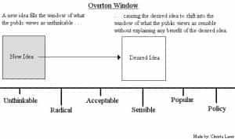
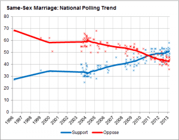

< < < Back
Why The Overton Window Is The Key To Defeating Leftists – Return Of Kings
In my previous article, I examined the tactics that are employed by street level SJWs, with the hope that our community could understand and employ them in an equally effective manner. While keeping the street level SJWs in check is a good start, more must be done if we are to ultimately diminish their influence.
Specifically, we must first take back the initiative in the culture war that we are currently engaged in with the left, and then win it for good. This is an objective that is even more important than winning elections because, as Andrew Breitbart once noted, politics is inextricably linked with culture. This is because every boring policy or unoriginal political position adopted by a politician has some basis in that individual’s world view. This means that to only fight the left at the political level, like mainstream conservatives do, results in an uphill fight that the left usually wins.
Although the tide is beginning to turn against the left, due in part to intellectual and cultural dissidents such as ourselves, there is still more work to be done. Accordingly, it is necessary to discuss the most important tool that the leftist and globalist intelligentsia uses to manipulate public perceptions and opinions. This tool is the Overton Window, and once it is fully understood, it can become another tool that we can use against the SJWs.
The Overton Window Explained

How ideas are deemed “extreme”
First created by Joseph Overton, a former senior Vice President of the Mackinac Center for Public Policy, the Overton window is a mechanism used by the SJW intelligentsia and political elite to determine the viability of a movement or idea. If something is within “the window,” it is seen as a “normal” or “respectable” position or belief that a citizen is allowed to possess. If a belief or movement is placed on the outside of the window, it is deemed “extreme,” “outlandish,” or “foolish” by the powers that be.
This is an incredibly effective tool that can be used to subjugate an entire population because it only requires a powerful individual or small group of individuals to first decide what is acceptable or extreme, and then use the government, religious institutions, and the media to push ideas that are deemed “acceptable.” It is especially potent because this “window” is never fixed in one place, meaning that it can be moved in any direction based on both external factors and the user’s beliefs.
The Overton Window in Action

Only became “popular” after a few court cases and favorable media attention.
A great example of the Overton Window in action can be seen in the Gay, Lesbian, Transsexual, Bi-Sexual, or Pan-Unicorn rights movement. In the 1990s, and even in George W. Bush’s second term ten years ago, this movement had very little political power behind it. Even with the heavy artillery provided by Hollywood elites, and leftist strongholds like Massachusetts and California, most Americans were either apathetic or opposed to gay marriage and the gay lobby itself was never able to portray themselves as a mainstream part of American society.
This all changed in 2008 with California’s Proposition 8, a ballot referendum where a majority of the Californians voted in favor of defining a marriage as between a man and a woman. Even though the gay lobby lost the popular vote, they were able to overturn the will of the people by appealing the vote and ensuring that the case ended up in the hands of a leftist judge. Their legal victory over Proposition 8 signaled a shift in the window, in which homosexuality and other similar identities were now mainstream, and any criticism of them was now “bigoted” or “extreme.”
Because of this, we have now seen stories of executives being fired from their jobs for believing in traditional marriage, businesses being boycotted and banned from cities because they wouldn’t kowtow to the gay lobby, and even Christian bakers being fined six figures and slapped with a gag order because they refused to bake a cake for a gay couple. Such a change would not have been possible without moving the Overton window in a direction favored by SJWs.
How we can manipulate the Overton Window
The political elite hates it when someone like Trump turns the window back on them.
Just because the SJW intelligentsia has had greater success in using the Overton Window than us, doesn’t mean that their enemies can’t use it as well. One key example of the potential that shifting the Overton window would create, can be seen with Donald Trump’s run for President. Before Trump announced his candidacy, the race was going to look very much like a repeat from 2012, where a Republican and Democratic candidate that were both anointed by the media and the political class would pretend to have major disagreements over policy and ideology, but would really disagree over one or two minor issues.
This all changed when Trump declared his candidacy, at roughly the exact same time that news surrounding the shooting death of Kate Steinle at the hands of an illegal immigrant began to circulate. With this incident, Trump saw an opportunity to make illegal immigration and border security his primary issues, and since then has expanded to include a variety of pro-nationalist positions and policy objectives. As a result, his candidacy has garnered widespread support amongst a wide cross-section of the American public because of both his positive message and the fact that he has turned back every leftist attack that has been leveled at him, thereby making him one of the strongest candidates that non-leftists have been able to produce since Reagan.
His candidacy itself is solid evidence of our side’s ability to move the window in our direction as well, because Trump’s candidacy and the issues he discusses on a regular basis have resulted in the window being moved further to the right than it has been in decades. Even ten years ago, a modern border wall and a ban on migrants from countries compromised by terrorists would’ve been unheard of, yet Trump has succeeded in making these proposals mainstream.
Final Thoughts
Understanding the Overton Window, and its importance in shifting public opinion is a critical element of any political revolution. This is especially true with the Alt-Right, whose efforts in their free speech war with Twitter, culture war with campus radicals, and exposés concerning Hillary’s health or other dirty secrets; have helped to shift the window further in our direction.
Read More: Why Donald Trump’s Immigration Speech Was A Massive Success